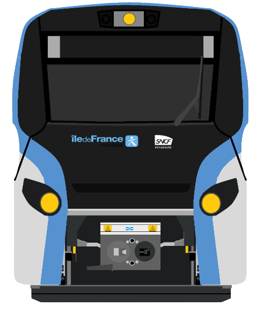
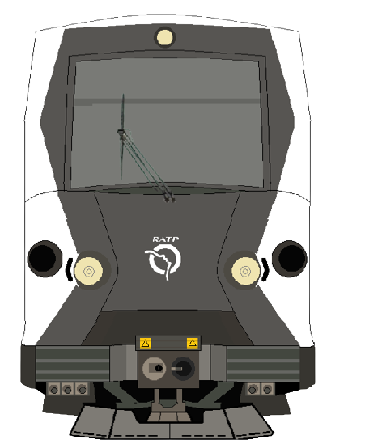
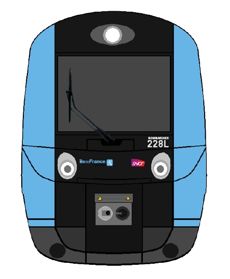
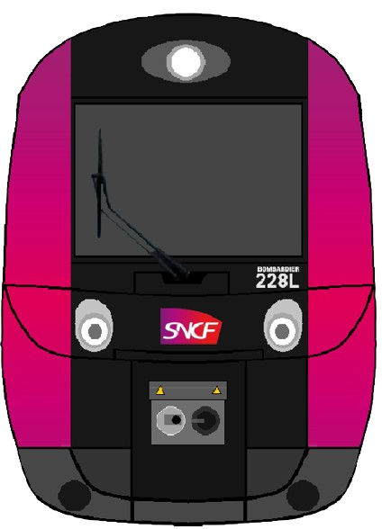
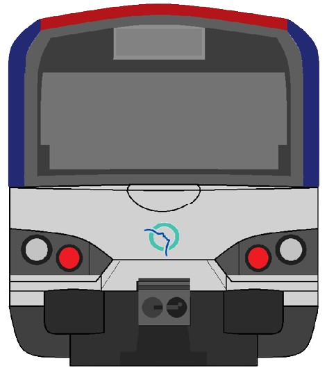
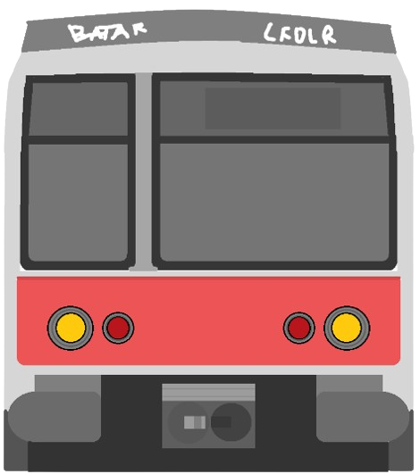

Les RER
     - RER NG (RER E EDITION/ Avec le logo SNCF Voyageur) [DR GOJO] - MI09 (RER A) [DR GOJO] - z50000 IDFM/Carmillon (RER E) [DR GOJO] - MS61 (RER A) [DR GOJO] - MI84 IDF (RER B/A) [DR GOJO]
Site fait par Dr Gojo
Site 100 % Libre (No Copyright: PUBLIC DOMAIN)
Les créations sont libres d’utilisations pour divers usages !
- MI09 (RER A) [DR GOJO]
- z50000 IDFM/Carmillon (RER E) [DR GOJO]
- MS61 (RER A) [DR GOJO]
- MI84 IDF (RER B/A) [DR GOJO]